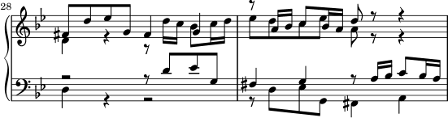

| [ << Notensatz ] | [Top][Contents][Index] | [ Literatur >> ] |
| [ < Verbessern durch Benchmarking ] | [ Up: Automatisierter Notensatz ] | [ Ein Programm bauen > ] |
Alles richtig machen
Wir können auch die Fähigkeiten von LilyPond, Notensatzentscheidungen alleine zu fällen, messen, indem wir die Ausgabe von LilyPond mit der Ausgabe eines kommerziellen Notensatzprogramms vergleichen. In diesem Fall haben wir Finale 2008 genommen, eines der beliebtesten Notensatzprogramme, insbesondere in Nordamerika. Sibelius ist Finales hauptsächlicher Gegenspieler, offensichtlich vor allem in Europa verbreitet.
Für unseren Vergleich haben wir uns für die Fuge in G-Moll aus dem Wohltemperierten Clavier 1, BWV 861 von J. S. Bach entschieden, mit dem Hauptthema:
![[image of music]](../77/lily-84b0de4f.png)
In unserem Vergleich setzten wir die letzten sieben Takte des Stückes (28–34) in Finale und LilyPond. Das ist der Punkt, an der das Thema als dreistimmige Engführung in den Schlussabschnitt überleitet. In der Finale-Version haben wir der Versuchung widerstanden, jedwede Anpassungen abweichend vom Standard vorzunehmen, weil wir zeigen wollen, welche Dinge von den beiden Programmen ohne Hilfeleistung richtig gemacht werden. Die einzigen größeren Änderungen, die wir vorgenommen haben, war die Anpassung der Seitengröße an die Seitengröße dieses Aufsatzes und die Begrenzung der Noten auf zwei Systeme, um den Vergleich einfacher zu machen. In der Standardeinstellung Finale hätte zwei Zeilen mit je drei Takten und schließlich eine letzte Zeile gesetzt, die nur einen einzigen Takt enthält.
Viele der Unterschiede zwischen den beiden Sätzen finden sich in den Takten 28–29, hier zuerst in Finales Version, dann in der Version von LilyPond:


Einige der Mängel des nicht editierten Finale-Satzes beinhalten:
- Die meisten Balken sind zu weit vom Notensystem entfernt. Ein Balken, der zum Zentrum des Systems zeigt, sollte etwa die Länge einer Oktave haben, aber Notensetzer verkürzen die Länge, wenn der Balken in polyphonen Situationen aus dem System herauszeigt. Die Bebalkung von Finale kann einfach mit ihrem Patterson Beams-Plugin verbessert werden, aber wir haben diesen Schritt für dieses Beispiel ausgelassen.
- Finale passt die Position von ineinander greifenden Notenköpfen
nicht an, sodass die Noten sehr schwer lesbar werden, wenn
die untere und obere Stimme zeitweise ausgetauscht werden:
![[image of music]](../9f/lily-ca218ddd.png)
- Finale positioniert alle Pausen an einer festen Position auf dem System. Der Benutzer kann sie anpassen, wie er es richtig findet, aber das Programm unternimmt keinen Versuch, den Inhalt der anderen Stimme mit einzubeziehen. Durch einen Glücksfall kommen keine wirklichen Kollisionen zwischen Noten und Pausen in diesem Beispiel vor, aber das liegt mehr an der Position der Noten als an der der Pausen. Anders gesagt: Bach verdient mehr Aufmerksamkeit um vollständige Kollisionen zu vermeiden als Finale ihm gönnt.
Dieses Beispiel soll nicht suggerieren, dass man mit Finale nicht Notensatz in Publikationsqualität erstellen könnte. Das Programm ist durchaus dazu fähig, wenn ein erfahrener Benutzer genug Zeit und Fähigkeit mitbringt. Einer der fundamentalen Unterschiede zwischen LilyPond und kommerziellen Notensatzprogrammen ist, dass LilyPond versucht, den Aufwand an menschlicher Intervention auf ein absolutes Minimum zu reduzieren, während andere Programme versuchen, ein attraktives Programmfenster zu bieten, in dem die Anpassungen vorgenommen werden können.
Einen besonders hervorstechenden Mangel von Finale ist ein fehlendes b-Vorzeichen in Takt 33:

Das b-Symbol wird benötigt, um das Auflösungzeichen im selben Takt rückgängig zu machen, aber Finale lässt es aus, weil es in einer anderen Stimme vorkommt. Der Benutzer muss nicht nur daran denken, ein Balken-Plugin zu starten und die Notenköpfe und Pausen neu anzuordnen, er muss auch jeden Takt prüfen, ob Versetzungszeichen aus anderen Stimmen korrigiert werden müssen, damit nicht ein Notensatzfehler die Probe unnötig unterbricht.
Wenn Sie diese Beispiel noch detaillierter betrachten wollen, können Sie den vollen siebentaktigen Ausschnitt am Ende dieses Aufsatzes als Notensatz in vier unterschiedlichen publizierten Editionen finden. Nähere Betrachtung zeigt, dass es einige akzeptable Variationen zwischen den handgestochenen Beispielen gibt, dass LilyPond aber ziemlich guten Notensatz im Rahmen dieser Variationen produziert. Auch die LilyPond-Ausgabe hat noch ihre Fehler: sie ist beispielsweise etwas zu aggressiv bei der Verkürzung einiger Hälse – hier ist also noch Raum für weitere Entwicklung und Feineinstellung.
Natürlich hängt Typographie vom menschlichen Urteil der Erscheinung ab, sodass Menschen nicht vollständig ersetzt werden können. Viel der eintönigen Arbeit kann jedoch automatisiert werden. Wenn LilyPond die meisten üblichen Situationen richtig löst, ist das schon eine große Verbesserung gegenüber existierender Software. Im Laufe der Jahre wir das Programm immer besser und macht mehr und mehr Sachen automatisch, sodass manuelles Eingreifen immer seltener wird. Wo manuelle Anpassungen benötigt werden, wurde die Struktur von LilyPond mit Flexibilität im Hinterkopf geplant.
| [ << Notensatz ] | [Top][Contents][Index] | [ Literatur >> ] |
| [ < Verbessern durch Benchmarking ] | [ Up: Automatisierter Notensatz ] | [ Ein Programm bauen > ] |